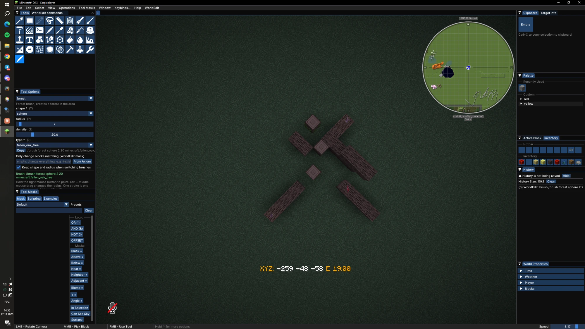

<meta charset="utf-8">
<title>WorldEdit Brush Icons</title>
<meta name="claude:viewport-fit-sides" content="cover">
<link rel="preconnect" href="https://fonts.googleapis.com">
<link rel="stylesheet" href="https://fonts.googleapis.com/css2?family=Space+Grotesk:wght@500;600&family=Inter:wght@400;500&family=JetBrains+Mono:wght@400;500&display=swap">
<style>
/* Layout: one dark editor-like sheet; a side-by-side comparison with Axiom first, then one row per icon with its four test renders. */
:root {
  color-scheme: dark;
  --bg: #0d1117;          /* page, close to Axiom's window background */
  --panel: #161c25;       /* sheet sections */
  --line: #263142;
  --fg: #e6ebf2;
  --muted: #8d99ab;
  --axiom-blue: #25436b;  /* Axiom tool button, sampled from the screenshot */
  --axiom-active: #1f8ef1;
  --tile-dark: #0b0b0c;   /* window background behind the grid */
  --f-display: "Space Grotesk", "Segoe UI", system-ui, sans-serif;
  --f-body: "Inter", "Segoe UI", system-ui, sans-serif;
  --f-mono: "JetBrains Mono", "Cascadia Mono", Consolas, monospace;
}
body {
  background: var(--bg); color: var(--fg); font: 14px/1.5 var(--f-body);
  padding-left: max(16px, env(safe-area-inset-left, 0px));
  padding-right: max(16px, env(safe-area-inset-right, 0px));
  padding-block: 28px 48px;
}
main { max-width: 1080px; margin: 0 auto; display: grid; gap: 28px; }
h1, h2 { font-family: var(--f-display); font-weight: 600; text-wrap: balance; margin: 0; }
h1 { font-size: 28px; letter-spacing: -0.01em; }
h2 { font-size: 18px; }
p { margin: 0; max-width: 68ch; color: var(--muted); }
header { display: grid; gap: 8px; }
code, .mono { font-family: var(--f-mono); font-size: 12.5px; }
section { background: var(--panel); border: 1px solid var(--line); border-radius: 8px; padding: 20px; display: grid; gap: 16px; min-width: 0; }
.compare { display: flex; flex-wrap: wrap; gap: 24px; align-items: flex-start; }
.compare figure { margin: 0; display: grid; gap: 8px; min-width: 0; }
.compare figcaption, .label { font-size: 11px; text-transform: uppercase; letter-spacing: 0.08em; color: var(--muted); }
.ref-crop { position: relative; overflow: hidden; background: var(--tile-dark); }
.ref-crop img { position: absolute; max-width: none; image-rendering: auto; }
.mock { background: var(--tile-dark); padding: 4px; display: grid; gap: 6px; }
.mock .grp { font-size: 10px; color: var(--muted); letter-spacing: 0.06em; text-transform: uppercase; padding-left: 2px; }
.mock .row { display: flex; flex-wrap: wrap; gap: var(--gap); }
.zoom-toggle { display: flex; gap: 6px; }
.zoom-toggle button {
  font: 500 12px var(--f-body); color: var(--fg); background: transparent; border: 1px solid var(--line);
  border-radius: 4px; padding: 4px 10px; cursor: pointer;
}
.zoom-toggle button[aria-pressed="true"] { background: var(--axiom-blue); border-color: var(--axiom-blue); }
.zoom-toggle button:focus-visible { outline: 2px solid var(--axiom-active); outline-offset: 2px; }
.btn { width: var(--b); height: var(--b); background: var(--axiom-blue); position: relative; flex: none; }
.btn canvas { position: absolute; inset: 0; width: 100%; height: 100%; }
.btn.borrowed { background: transparent; outline: 1px dashed #34465f; outline-offset: -1px; }
.btn.borrowed span { position: absolute; inset: 0; display: grid; place-items: center; font: 500 9px var(--f-mono); color: var(--muted); }
.list { display: grid; gap: 2px; }
.item { display: grid; grid-template-columns: minmax(0, 1fr) auto; gap: 16px; align-items: center; padding: 10px 0; border-top: 1px solid var(--line); }
.item:first-child { border-top: 0; }
.meta { display: grid; gap: 2px; min-width: 0; }
.meta .name { font: 500 14px var(--f-mono); }
.meta .grp { font-size: 11px; color: var(--muted); text-transform: uppercase; letter-spacing: 0.08em; }
.meta .what { font-size: 13px; color: var(--muted); }
.renders { display: flex; gap: 10px; align-items: end; flex-wrap: wrap; }
.tile { display: grid; justify-items: center; gap: 4px; }
.tile .sw { position: relative; }
.tile .sw.blue { background: var(--axiom-blue); }
.tile .sw.dark { background: var(--tile-dark); }
.tile small { font: 10px var(--f-mono); color: var(--muted); }
.tile canvas { display: block; }
@media (max-width: 640px) {
  .item { grid-template-columns: minmax(0, 1fr); }
}
</style>

<main lang="ru">
  <header>
    <h1>WorldEdit Brush Icons</h1>
    <p>15 иконок для окна кистей WorldEdit. Каждая картинка на этой странице нарисована так же, как её рисует мод: SVG разбирается по правилам <code>VectorIcon.java</code> (кривые режутся на 12 отрезков, окружности на 32) и выводится плоскими заливками и линиями. Что здесь, то и в игре.</p>
  </header>

  <section aria-labelledby="var-h" id="var-sec">
    <h2 id="var-h">Варианты item.svg</h2>
    <p>Справа каждый вариант стоит в ряду «Другое» рядом с extinguish и butcher, в 2× масштабе окна.</p>
    <div class="list" id="var-list"></div>
  </section>

  <section aria-labelledby="cmp-h">
    <div style="display:flex;justify-content:space-between;gap:12px;flex-wrap:wrap;align-items:center">
      <h2 id="cmp-h">Рядом с инструментами Axiom</h2>
      <div class="zoom-toggle" role="group" aria-label="Масштаб">
        <button id="z1" type="button" aria-pressed="false">1×, как на экране</button>
        <button id="z2" type="button" aria-pressed="true">2×</button>
      </div>
    </div>
    <div class="compare">
      <figure>
        <figcaption>Axiom · окно Tools (скриншот)</figcaption>
        <div class="ref-crop" id="ref"></div>
      </figure>
      <figure>
        <figcaption>Окно WorldEdit (макет; пунктир = иконка Axiom с меткой WE)</figcaption>
        <div class="mock" id="mock"></div>
      </figure>
    </div>
  </section>

  <section aria-labelledby="all-h">
    <h2 id="all-h">Каждая иконка в 32 и 64 px</h2>
    <div class="list" id="list"></div>
  </section>
</main>

<script>
const ICONS = {
 "butcher": "<svg xmlns=\"http://www.w3.org/2000/svg\" viewBox=\"0 0 32 32\" fill=\"none\" stroke=\"#fff\" stroke-width=\"2.5\">\n  <path d=\"M10 28.5V23C6 21 4.5 17 4.5 13C4.5 7 9.5 3 16 3C22.5 3 27.5 7 27.5 13C27.5 17 26 21 22 23V28.5Z\"/>\n  <circle fill=\"#fff\" stroke=\"none\" cx=\"11.5\" cy=\"13.5\" r=\"3\"/>\n  <circle fill=\"#fff\" stroke=\"none\" cx=\"20.5\" cy=\"13.5\" r=\"3\"/>\n  <polygon fill=\"#fff\" stroke=\"none\" points=\"16,17.5 18,21 14,21\"/>\n  <line stroke-width=\"2\" x1=\"14\" y1=\"24.5\" x2=\"14\" y2=\"28.5\"/>\n  <line stroke-width=\"2\" x1=\"18\" y1=\"24.5\" x2=\"18\" y2=\"28.5\"/>\n</svg>\n",
 "cylinder": "<svg xmlns=\"http://www.w3.org/2000/svg\" viewBox=\"0 0 32 32\" fill=\"none\" stroke=\"#fff\" stroke-width=\"2.5\">\n  <ellipse fill=\"#fff\" stroke=\"none\" cx=\"16\" cy=\"7.5\" rx=\"10.5\" ry=\"4.5\"/>\n  <path fill=\"#fff\" stroke=\"none\" d=\"M5.5 10.5V24.5A10.5 4.5 0 0 0 26.5 24.5V10.5A10.5 4.5 0 0 1 5.5 10.5Z\"/>\n</svg>\n",
 "dilate": "<svg xmlns=\"http://www.w3.org/2000/svg\" viewBox=\"0 0 32 32\" fill=\"none\" stroke=\"#fff\" stroke-width=\"2.5\">\n  <rect fill=\"#fff\" stroke=\"none\" x=\"11\" y=\"11\" width=\"10\" height=\"10\"/>\n  <rect stroke-width=\"2\" x=\"3\" y=\"3\" width=\"26\" height=\"26\"/>\n  <polygon fill=\"#fff\" stroke=\"none\" points=\"12.5,22.5 16,26 19.5,22.5\"/>\n  <polygon fill=\"#fff\" stroke=\"none\" points=\"19.5,9.5 16,6 12.5,9.5\"/>\n  <polygon fill=\"#fff\" stroke=\"none\" points=\"22.5,19.5 26,16 22.5,12.5\"/>\n  <polygon fill=\"#fff\" stroke=\"none\" points=\"9.5,12.5 6,16 9.5,19.5\"/>\n</svg>\n",
 "erode": "<svg xmlns=\"http://www.w3.org/2000/svg\" viewBox=\"0 0 32 32\" fill=\"none\" stroke=\"#fff\" stroke-width=\"2.5\">\n  <polygon fill=\"#fff\" stroke=\"none\" points=\"3,29 3,14 8,14 8,9 15,9 15,14 19,14 19,19 24,19 24,23 29,23 29,29\"/>\n  <polygon fill=\"#fff\" stroke=\"none\" points=\"20,6.5 22,8.5 20,10.5 18,8.5\"/>\n  <polygon fill=\"#fff\" stroke=\"none\" points=\"25.5,11.5 27.5,13.5 25.5,15.5 23.5,13.5\"/>\n  <polygon fill=\"#fff\" stroke=\"none\" points=\"26,4 27.5,5.5 26,7 24.5,5.5\"/>\n</svg>\n",
 "extinguish": "<svg xmlns=\"http://www.w3.org/2000/svg\" viewBox=\"0 0 32 32\" fill=\"none\" stroke=\"#fff\" stroke-width=\"2.5\">\n  <polygon fill=\"#fff\" stroke=\"none\" points=\"16,2.5 15.61,4.06 14.99,5.5 14.17,6.85 13.22,8.15 12.98,8.45 22.92,18.39 22.84,17.66 22.66,16.59 22.43,15.59 22.14,14.65 21.81,13.75 21.45,12.89 21.07,12.07 20.68,11.28 20.28,10.51 19.88,9.75 19.5,9 19.36,9.71 19.21,10.34 19.04,10.91 18.85,11.43 18.65,11.89 18.44,12.31 18.21,12.7 17.98,13.07 17.83,13.3 17,12.47 17,12.29 16.98,11.22 16.96,10.17 16.93,9.14 16.88,8.12 16.8,7.14 16.7,6.17 16.58,5.22 16.42,4.29 16.23,3.39\"/>\n  <polygon fill=\"#fff\" stroke=\"none\" points=\"9.01,13.53 8.27,14.8 7.6,16.38 7.16,18.1 7,20 7.15,21.56 7.61,23.06 8.35,24.44 9.34,25.66 10.56,26.65 11.94,27.39 13.44,27.85 15,28 16.56,27.85 18.06,27.39 19.44,26.65 20.66,25.66 20.87,25.4\"/>\n  <line stroke-width=\"2.5\" x1=\"4\" y1=\"4\" x2=\"28\" y2=\"28\"/>\n</svg>\n",
 "feature": "<svg xmlns=\"http://www.w3.org/2000/svg\" viewBox=\"0 0 32 32\" fill=\"none\" stroke=\"#fff\" stroke-width=\"2.5\">\n  <path fill=\"#fff\" stroke=\"none\" d=\"M5 4L7.5 7.5L10 3.5L12.5 7.5L15 4V9C15 11.5 13 13 10 13C7 13 5 11.5 5 9Z\"/>\n  <line x1=\"10\" y1=\"14.5\" x2=\"10\" y2=\"29\"/>\n  <path fill=\"#fff\" stroke=\"none\" d=\"M11.5 25C11.5 20 14 18 18 17.5C18 22 16 24.5 11.5 25Z\"/>\n  <polygon fill=\"#fff\" stroke=\"none\" points=\"18,29 19.5,23.5 23.5,20.5 27.5,21.5 29.5,25.5 29.5,29\"/>\n  <polygon fill=\"#fff\" stroke=\"none\" points=\"24,3 25.2,6.8 29,8 25.2,9.2 24,13 22.8,9.2 19,8 22.8,6.8\"/>\n</svg>\n",
 "forest": "<svg xmlns=\"http://www.w3.org/2000/svg\" viewBox=\"0 0 32 32\" fill=\"none\" stroke=\"#fff\" stroke-width=\"2.5\">\n  <polygon fill=\"#fff\" stroke=\"none\" points=\"11,2 15.68,8.67 13.55,8.67 17.8,15.33 15.25,15.33 19.5,22 2.5,22 6.75,15.33 4.2,15.33 8.45,8.67 6.32,8.67\"/>\n  <rect fill=\"#fff\" stroke=\"none\" x=\"9.5\" y=\"23.5\" width=\"3\" height=\"6\"/>\n  <polygon fill=\"#fff\" stroke=\"none\" points=\"24,10 27.02,14.33 25.65,14.33 28.4,18.67 26.75,18.67 29.5,23 18.5,23 21.25,18.67 19.6,18.67 22.35,14.33 20.98,14.33\"/>\n  <rect fill=\"#fff\" stroke=\"none\" x=\"22.5\" y=\"24.5\" width=\"3\" height=\"4.5\"/>\n</svg>\n",
 "gravity": "<svg xmlns=\"http://www.w3.org/2000/svg\" viewBox=\"0 0 32 32\" fill=\"none\" stroke=\"#fff\" stroke-width=\"2.5\">\n  <line stroke-width=\"2\" x1=\"11\" y1=\"2\" x2=\"11\" y2=\"8\"/>\n  <line stroke-width=\"2\" x1=\"16\" y1=\"2\" x2=\"16\" y2=\"5.5\"/>\n  <line stroke-width=\"2\" x1=\"21\" y1=\"2\" x2=\"21\" y2=\"8\"/>\n  <polygon fill=\"#fff\" stroke=\"none\" points=\"12.47,8.57 22.93,11.97 19.53,22.43 9.07,19.03\"/>\n  <rect fill=\"#fff\" stroke=\"none\" x=\"3\" y=\"26.5\" width=\"26\" height=\"3\"/>\n</svg>\n",
 "heightmap": "<svg xmlns=\"http://www.w3.org/2000/svg\" viewBox=\"0 0 32 32\" fill=\"none\" stroke=\"#fff\" stroke-width=\"2.5\">\n  <rect stroke-width=\"2\" x=\"3\" y=\"3\" width=\"26\" height=\"26\"/>\n  <rect fill=\"#fff\" stroke=\"none\" x=\"6.5\" y=\"18\" width=\"3\" height=\"7.5\"/>\n  <rect fill=\"#fff\" stroke=\"none\" x=\"10.5\" y=\"11.5\" width=\"3\" height=\"14\"/>\n  <rect fill=\"#fff\" stroke=\"none\" x=\"14.5\" y=\"7.5\" width=\"3\" height=\"18\"/>\n  <rect fill=\"#fff\" stroke=\"none\" x=\"18.5\" y=\"13\" width=\"3\" height=\"12.5\"/>\n  <rect fill=\"#fff\" stroke=\"none\" x=\"22.5\" y=\"19.5\" width=\"3\" height=\"6\"/>\n</svg>\n",
 "item": "<svg xmlns=\"http://www.w3.org/2000/svg\" viewBox=\"0 0 32 32\" fill=\"none\" stroke=\"#fff\" stroke-width=\"2.5\">\n  <polygon fill=\"#fff\" stroke=\"none\" points=\"10.5,13.01 15.99,15.75 10.5,18.49 5.01,15.75\"/>\n  <polygon fill=\"#fff\" stroke=\"none\" points=\"3.9,17.21 9.6,20.06 9.6,26.54 3.9,23.69\"/>\n  <polygon fill=\"#fff\" stroke=\"none\" points=\"11.4,20.06 17.1,17.21 17.1,23.69 11.4,26.54\"/>\n  <polygon fill=\"#fff\" stroke=\"none\" points=\"19.5,10 19.5,23.5 23.1,20.35 25.35,25.3 27.6,24.4 25.35,19.45 29.4,19.45\"/>\n  <line stroke-width=\"2\" x1=\"19.5\" y1=\"3\" x2=\"19.5\" y2=\"7\"/>\n  <line stroke-width=\"2\" x1=\"12.5\" y1=\"10\" x2=\"16.5\" y2=\"10\"/>\n  <line stroke-width=\"2\" x1=\"14.2\" y1=\"4.7\" x2=\"17\" y2=\"7.5\"/>\n</svg>\n",
 "lower": "<svg xmlns=\"http://www.w3.org/2000/svg\" viewBox=\"0 0 32 32\" fill=\"none\" stroke=\"#fff\" stroke-width=\"2.5\">\n  <polygon fill=\"#fff\" stroke=\"none\" points=\"14.25,2 17.75,2 17.75,11.5 22.5,11.5 16,18.5 9.5,11.5 14.25,11.5\"/>\n  <path fill=\"#fff\" stroke=\"none\" d=\"M3 29V10C8 10 9 25 16 25S24 15 29 15V29Z\"/>\n</svg>\n",
 "morph": "<svg xmlns=\"http://www.w3.org/2000/svg\" viewBox=\"0 0 32 32\" fill=\"none\" stroke=\"#fff\" stroke-width=\"2.5\">\n  <path fill=\"#fff\" stroke=\"none\" d=\"M3 30V21C6 21 6.5 13.5 9 13.5S12 21 15 21C18 21 19 26 22 26S26 21 29 21V30Z\"/>\n  <path stroke-width=\"2.25\" d=\"M9 10C11 1 21 1 22.4 15.5\"/>\n  <polygon fill=\"#fff\" stroke=\"none\" points=\"22.93,20.98 19.02,16.84 25.98,16.16\"/>\n</svg>\n",
 "snow": "<svg xmlns=\"http://www.w3.org/2000/svg\" viewBox=\"0 0 32 32\" fill=\"none\" stroke=\"#fff\" stroke-width=\"2.5\">\n  <line stroke-width=\"2.5\" x1=\"16\" y1=\"2.5\" x2=\"16\" y2=\"16.5\"/>\n  <line stroke-width=\"2.5\" x1=\"9.94\" y1=\"6\" x2=\"22.06\" y2=\"13\"/>\n  <line stroke-width=\"2.5\" x1=\"22.06\" y1=\"6\" x2=\"9.94\" y2=\"13\"/>\n  <polygon fill=\"#fff\" stroke=\"none\" points=\"3,30 3,25.5 15,25.5 15,22.5 29,22.5 29,30\"/>\n  <polygon fill=\"#fff\" stroke=\"none\" points=\"3,24 13.5,24 13.5,21 29,21 29,18.8 11.3,18.8 11.3,21.8 3,21.8\"/>\n</svg>\n",
 "snowsmooth": "<svg xmlns=\"http://www.w3.org/2000/svg\" viewBox=\"0 0 32 32\" fill=\"none\" stroke=\"#fff\" stroke-width=\"2.5\">\n  <path fill=\"#fff\" stroke=\"none\" d=\"M3 30V23C7 17 11 16.5 16 20S25 22 29 17V30Z\"/>\n  <path stroke-width=\"2.5\" d=\"M3 18.5C7 12.5 11 12 16 15.5S25 17.5 29 12.5\"/>\n  <line stroke-width=\"2\" x1=\"8.5\" y1=\"2.5\" x2=\"8.5\" y2=\"10.5\"/>\n  <line stroke-width=\"2\" x1=\"5.04\" y1=\"4.5\" x2=\"11.96\" y2=\"8.5\"/>\n  <line stroke-width=\"2\" x1=\"11.96\" y1=\"4.5\" x2=\"5.04\" y2=\"8.5\"/>\n</svg>\n",
 "splatter": "<svg xmlns=\"http://www.w3.org/2000/svg\" viewBox=\"0 0 32 32\" fill=\"none\" stroke=\"#fff\" stroke-width=\"2.5\">\n  <path stroke-width=\"2\" d=\"M22.89 27.02A13 13 0 0 1 9.11 27.02\"/>\n  <path stroke-width=\"2\" d=\"M4.98 22.89A13 13 0 0 1 4.98 9.11\"/>\n  <path stroke-width=\"2\" d=\"M9.11 4.98A13 13 0 0 1 22.89 4.98\"/>\n  <path stroke-width=\"2\" d=\"M27.02 9.11A13 13 0 0 1 27.02 22.89\"/>\n  <rect fill=\"#fff\" stroke=\"none\" x=\"13.25\" y=\"13.25\" width=\"5.5\" height=\"5.5\"/>\n  <rect fill=\"#fff\" stroke=\"none\" x=\"7.75\" y=\"8.75\" width=\"3.5\" height=\"3.5\"/>\n  <rect fill=\"#fff\" stroke=\"none\" x=\"19.75\" y=\"7.75\" width=\"3.5\" height=\"3.5\"/>\n  <rect fill=\"#fff\" stroke=\"none\" x=\"20.75\" y=\"19.75\" width=\"3.5\" height=\"3.5\"/>\n  <rect fill=\"#fff\" stroke=\"none\" x=\"8.25\" y=\"20.25\" width=\"3.5\" height=\"3.5\"/>\n  <rect fill=\"#fff\" stroke=\"none\" x=\"14.9\" y=\"5.4\" width=\"2.2\" height=\"2.2\"/>\n  <rect fill=\"#fff\" stroke=\"none\" x=\"4.9\" y=\"15.4\" width=\"2.2\" height=\"2.2\"/>\n  <rect fill=\"#fff\" stroke=\"none\" x=\"24.9\" y=\"14.4\" width=\"2.2\" height=\"2.2\"/>\n  <rect fill=\"#fff\" stroke=\"none\" x=\"15.4\" y=\"24.4\" width=\"2.2\" height=\"2.2\"/>\n</svg>\n"
};
const GROUPS = [
  ["Фигуры", ["sphere", "cylinder", "set", "splatter", "clipboard"]],
  ["Рельеф", ["smooth", "snowsmooth", "raise", "lower", "heightmap", "morph", "erode", "dilate", "deform", "gravity"]],
  ["Природа", ["forest", "feature", "snow", "biome"]],
  ["Другое", ["extinguish", "butcher", "item"]],
];
const WHAT = {
  cylinder: "Ставит цилиндр из блоков.",
  splatter: "Разбрасывает блоки внутри сферы, гуще к центру.",
  snowsmooth: "Сглаживает рельеф вместе со слоями снега.",
  lower: "Опускает рельеф. Пара к иконке Elevation из Axiom, которую берёт raise.",
  heightmap: "Поднимает и опускает рельеф по серой карте высот.",
  morph: "Срезает и заполняет одновременно: материал с бугров уходит во впадины.",
  erode: "Объедает открытые блоки.",
  dilate: "Наращивает поверхность наружу, заполняет щели.",
  gravity: "Висящие в воздухе блоки падают вниз.",
  forest: "Сажает деревья.",
  feature: "Ставит объект генерации мира: цветы, камни, руды.",
  snow: "Кладёт снег на поверхности.",
  extinguish: "Тушит огонь.",
  butcher: "Убивает мобов в радиусе.",
  item: "Применяет предмет к блокам (костная мука, лопата).",
};

// ---- a port of VectorIcon.java: SVG subset -> list of {pts, closed, fill, stroke, w}
function parseIcon(text) {
  const doc = new DOMParser().parseFromString(text, "image/svg+xml");
  const root = doc.documentElement;
  const vb = (root.getAttribute("viewBox") || "0 0 32 32").trim().split(/[\s,]+/).map(Number);
  const shapes = [];
  walk(root, { fill: true, stroke: false, w: 1 }, shapes);
  return { shapes, minX: vb[0], minY: vb[1], size: Math.max(vb[2], vb[3]) };
}
function applyStyle(e, s) {
  const p = {};
  for (const k of ["fill", "stroke", "stroke-width"]) if (e.hasAttribute(k)) p[k] = e.getAttribute(k).trim();
  for (const decl of (e.getAttribute("style") || "").split(";")) {
    const i = decl.indexOf(":");
    if (i > 0) p[decl.slice(0, i).trim()] = decl.slice(i + 1).trim();
  }
  let w = s.w;
  if ("stroke-width" in p) { const v = parseFloat(p["stroke-width"]); if (!isNaN(v)) w = v; }
  return { fill: "fill" in p ? p.fill !== "none" : s.fill, stroke: "stroke" in p ? p.stroke !== "none" : s.stroke, w };
}
const num = (e, a) => { const v = (e.getAttribute(a) || "").trim(); return v ? parseFloat(v) : 0; };
function add(out, st, closed, p) {
  if (p.length >= 4 && (st.fill || st.stroke)) out.push({ pts: p, closed, fill: st.fill && closed, stroke: st.stroke, w: st.w });
}
function ellipse(out, st, cx, cy, rx, ry) {
  const p = [];
  for (let i = 0; i < 32; i++) { const a = Math.PI * 2 * i / 32; p.push(cx + Math.cos(a) * rx, cy + Math.sin(a) * ry); }
  add(out, st, true, p);
}
function walk(e, inherited, out) {
  const st = applyStyle(e, inherited);
  switch (e.tagName) {
    case "path": parsePath(e.getAttribute("d") || "", st, out); break;
    case "line": add(out, st, false, [num(e, "x1"), num(e, "y1"), num(e, "x2"), num(e, "y2")]); break;
    case "polyline": case "polygon": add(out, st, e.tagName === "polygon", numbers(e.getAttribute("points") || "")); break;
    case "circle": ellipse(out, st, num(e, "cx"), num(e, "cy"), num(e, "r"), num(e, "r")); break;
    case "ellipse": ellipse(out, st, num(e, "cx"), num(e, "cy"), num(e, "rx"), num(e, "ry")); break;
    case "rect": { const x = num(e, "x"), y = num(e, "y"), w = num(e, "width"), h = num(e, "height"); add(out, st, true, [x, y, x + w, y, x + w, y + h, x, y + h]); break; }
  }
  for (const c of e.children) walk(c, st, out);
}
function numbers(s) { return (s.match(/[-+]?(?:\d+\.?\d*|\.\d+)(?:[eE][-+]?\d+)?/g) || []).map(Number); }
function tokens(d) {
  let i = 0;
  const skip = () => { while (i < d.length && /[\s,]/.test(d[i])) i++; };
  return {
    atEnd() { skip(); return i >= d.length; },
    atCommand() { skip(); return i < d.length && /[A-DF-Za-df-z]/.test(d[i]); },
    command() { skip(); return d[i++]; },
    flag() { skip(); return d[i++] === "1" ? 1 : 0; },
    number() {
      skip();
      const m = /^[-+]?(?:\d+\.?\d*|\.\d+)(?:[eE][-+]?\d+)?/.exec(d.slice(i));
      if (!m) throw new Error("number expected at " + i + " in " + d);
      i += m[0].length; return parseFloat(m[0]);
    },
  };
}
function parsePath(d, st, out) {
  const t = tokens(d); let pts = [];
  let x = 0, y = 0, sx = 0, sy = 0, cx = 0, cy = 0, last = " ", cmd = " ";
  const flush = (closed) => { if (pts.length >= 4) out.push({ pts, closed, fill: st.fill && pts.length >= 6, stroke: st.stroke, w: st.w }); pts = []; };
  const cubic = (x0, y0, x1, y1, x2, y2, x3, y3) => {
    for (let k = 1; k <= 12; k++) { const s = k / 12, u = 1 - s;
      pts.push(u*u*u*x0 + 3*u*u*s*x1 + 3*u*s*s*x2 + s*s*s*x3, u*u*u*y0 + 3*u*u*s*y1 + 3*u*s*s*y2 + s*s*s*y3); }
  };
  while (!t.atEnd()) {
    if (t.atCommand()) cmd = t.command(); else if (cmd === "M") cmd = "L"; else if (cmd === "m") cmd = "l";
    const rel = cmd === cmd.toLowerCase(); const ox = rel ? x : 0, oy = rel ? y : 0;
    switch (cmd.toUpperCase()) {
      case "M": flush(false); x = ox + t.number(); y = oy + t.number(); sx = x; sy = y; pts.push(x, y); break;
      case "L": x = ox + t.number(); y = oy + t.number(); pts.push(x, y); break;
      case "H": x = ox + t.number(); pts.push(x, y); break;
      case "V": y = oy + t.number(); pts.push(x, y); break;
      case "C": case "S": {
        let x1, y1;
        if (cmd.toUpperCase() === "C") { x1 = ox + t.number(); y1 = oy + t.number(); }
        else { const sm = "CcSs".includes(last); x1 = sm ? 2*x - cx : x; y1 = sm ? 2*y - cy : y; }
        const x2 = ox + t.number(), y2 = oy + t.number(), ex = ox + t.number(), ey = oy + t.number();
        cubic(x, y, x1, y1, x2, y2, ex, ey); cx = x2; cy = y2; x = ex; y = ey; break;
      }
      case "Q": case "T": {
        let x1, y1;
        if (cmd.toUpperCase() === "Q") { x1 = ox + t.number(); y1 = oy + t.number(); }
        else { const sm = "QqTt".includes(last); x1 = sm ? 2*x - cx : x; y1 = sm ? 2*y - cy : y; }
        const ex = ox + t.number(), ey = oy + t.number();
        cubic(x, y, x + 2/3*(x1-x), y + 2/3*(y1-y), ex + 2/3*(x1-ex), ey + 2/3*(y1-ey), ex, ey); cx = x1; cy = y1; x = ex; y = ey; break;
      }
      case "A": {
        const rx = t.number(), ry = t.number(), rot = t.number(), large = t.flag() === 1, sweep = t.flag() === 1;
        const ex = ox + t.number(), ey = oy + t.number();
        arc(pts, x, y, rx, ry, rot, large, sweep, ex, ey); x = ex; y = ey; break;
      }
      case "Z": flush(true); x = sx; y = sy; break;
      default: throw new Error("unsupported path command " + cmd);
    }
    last = cmd;
  }
  flush(false);
}
function arc(pts, x1, y1, rx, ry, angle, large, sweep, x2, y2) {
  if (rx === 0 || ry === 0) { pts.push(x2, y2); return; }
  const phi = angle * Math.PI / 180, cos = Math.cos(phi), sin = Math.sin(phi);
  const dx = (x1 - x2) / 2, dy = (y1 - y2) / 2;
  const x1p = cos*dx + sin*dy, y1p = -sin*dx + cos*dy;
  let arx = Math.abs(rx), ary = Math.abs(ry);
  const lambda = x1p*x1p/(arx*arx) + y1p*y1p/(ary*ary);
  if (lambda > 1) { arx *= Math.sqrt(lambda); ary *= Math.sqrt(lambda); }
  const n = arx*arx*ary*ary - arx*arx*y1p*y1p - ary*ary*x1p*x1p, den = arx*arx*y1p*y1p + ary*ary*x1p*x1p;
  const coef = (large !== sweep ? 1 : -1) * Math.sqrt(Math.max(0, n / den));
  const cxp = coef*arx*y1p/ary, cyp = -coef*ary*x1p/arx;
  const cx = cos*cxp - sin*cyp + (x1 + x2)/2, cy = sin*cxp + cos*cyp + (y1 + y2)/2;
  const start = Math.atan2((y1p - cyp)/ary, (x1p - cxp)/arx), end = Math.atan2((-y1p - cyp)/ary, (-x1p - cxp)/arx);
  let delta = end - start;
  if (sweep && delta < 0) delta += Math.PI * 2; else if (!sweep && delta > 0) delta -= Math.PI * 2;
  const segs = Math.max(4, Math.ceil(Math.abs(delta) / (Math.PI * 2) * 32));
  for (let i = 1; i <= segs; i++) { const a = start + delta*i/segs, ex = arx*Math.cos(a), ey = ary*Math.sin(a);
    pts.push(cos*ex - sin*ey + cx, sin*ex + cos*ey + cy); }
}

// ---- drawing: flat fills, butt-ended lines, mitred joins, like ImGui's addPolyline / addConcavePolyFilled
const PARSED = {};
for (const [k, v] of Object.entries(ICONS)) PARSED[k] = parseIcon(v);
function drawIcon(canvas, name, side) {
  const dpr = window.devicePixelRatio || 1;
  canvas.width = Math.round(side * dpr); canvas.height = Math.round(side * dpr);
  canvas.style.width = side + "px"; canvas.style.height = side + "px";
  const ctx = canvas.getContext("2d"); ctx.scale(dpr, dpr);
  const icon = PARSED[name], sc = side / icon.size;
  ctx.fillStyle = ctx.strokeStyle = "#fff"; ctx.lineCap = "butt"; ctx.lineJoin = "miter"; ctx.miterLimit = 10;
  for (const s of icon.shapes) {
    const p = s.pts; if (p.length < 4) continue;
    ctx.beginPath(); ctx.moveTo((p[0] - icon.minX)*sc, (p[1] - icon.minY)*sc);
    for (let i = 2; i < p.length; i += 2) ctx.lineTo((p[i] - icon.minX)*sc, (p[i+1] - icon.minY)*sc);
    if (s.fill && p.length >= 6) { ctx.save(); ctx.closePath(); ctx.fill(); ctx.restore(); }
    if (s.stroke) {
      if (s.closed) ctx.closePath();
      ctx.lineWidth = Math.max(1, s.w * sc); ctx.stroke();
    }
  }
}

// ---- item variants
const VARIANTS = {};
const VAR_WHAT = {
  "item-1": "Вариант 1: курсор кликает по блоку (ПКМ, «использовать»).",
  "item-2": "Вариант 2: из блока растёт росток, вокруг искры (костная мука).",
  "item-3": "Вариант 3: лопата копает блок.",
};
for (const [k, v] of Object.entries(VARIANTS)) PARSED[k] = parseIcon(v);
const varList = document.getElementById("var-list");
if (!Object.keys(VARIANTS).length) document.getElementById("var-sec").hidden = true;
for (const name of Object.keys(VARIANTS)) {
  const row = document.createElement("div"); row.className = "item";
  row.innerHTML = `<div class="meta"><span class="name">${name}</span><span class="what">${VAR_WHAT[name] || ""}</span></div><div class="renders"></div>`;
  const r = row.querySelector(".renders");
  for (const [bg, side, pad] of [["blue", 32, 3], ["blue", 64, 6], ["dark", 32, 3], ["dark", 64, 6]]) {
    const t = document.createElement("div"); t.className = "tile";
    const sw = document.createElement("div"); sw.className = "sw " + bg; sw.style.width = sw.style.height = side + "px";
    const c = document.createElement("canvas"); c.style.position = "absolute"; c.style.left = c.style.top = pad + "px";
    drawIcon(c, name, side - pad * 2); sw.appendChild(c);
    t.appendChild(sw); const lab = document.createElement("small"); lab.textContent = side + " px"; t.appendChild(lab);
    r.appendChild(t);
  }
  const strip = document.createElement("div"); strip.className = "tile";
  const mk = document.createElement("div"); mk.className = "mock";
  mk.style.setProperty("--b", "62px"); mk.style.setProperty("--gap", "6.6px");
  const rw = document.createElement("div"); rw.className = "row";
  for (const n of ["extinguish", "butcher", name]) {
    const btn = document.createElement("div"); btn.className = "btn";
    const c = document.createElement("canvas"); drawIcon(c, n, 50); c.style.position = "absolute"; c.style.inset = "6px";
    btn.appendChild(c); rw.appendChild(btn);
  }
  mk.appendChild(rw); strip.appendChild(mk);
  const lab = document.createElement("small"); lab.textContent = "в ряду «Другое», 2×"; strip.appendChild(lab);
  r.appendChild(strip);
  varList.appendChild(row);
}

// ---- the list
const list = document.getElementById("list");
for (const [grp, fams] of GROUPS) for (const name of fams) {
  if (!ICONS[name]) continue;
  const row = document.createElement("div"); row.className = "item";
  row.innerHTML = `<div class="meta"><span class="grp">${grp}</span><span class="name">${name}.svg</span><span class="what">${WHAT[name] || ""}</span></div><div class="renders"></div>`;
  const r = row.querySelector(".renders");
  for (const [bg, side, pad] of [["blue", 32, 3], ["blue", 64, 6], ["dark", 32, 3], ["dark", 64, 6]]) {
    const t = document.createElement("div"); t.className = "tile";
    const sw = document.createElement("div"); sw.className = "sw " + bg; sw.style.width = sw.style.height = side + "px";
    const c = document.createElement("canvas"); c.style.position = "absolute"; c.style.left = c.style.top = pad + "px";
    drawIcon(c, name, side - pad * 2); sw.appendChild(c);
    t.appendChild(sw); const lab = document.createElement("small"); lab.textContent = side + " px"; t.appendChild(lab);
    r.appendChild(t);
  }
  list.appendChild(row);
}

// ---- side-by-side with Axiom (screenshot crop: tool grid at x 48..328, y 52..220 of a 2000 px wide image)
function buildCompare(z) {
  const ref = document.getElementById("ref"), img = ref.querySelector("img");
  ref.style.width = 280 * z + "px"; ref.style.height = 168 * z + "px";
  img.style.width = 2000 * z + "px"; img.style.left = -48 * z + "px"; img.style.top = -52 * z + "px";
  const mock = document.getElementById("mock"); mock.innerHTML = "";
  const b = 31 * z, gap = 3.3 * z, pad = Math.round(3 * z);
  mock.style.setProperty("--b", b + "px"); mock.style.setProperty("--gap", gap + "px");
  for (const [grp, fams] of GROUPS) {
    const g = document.createElement("div"); g.className = "grp"; g.textContent = grp; mock.appendChild(g);
    const row = document.createElement("div"); row.className = "row";
    for (const name of fams) {
      const btn = document.createElement("div"); btn.title = name;
      if (ICONS[name]) {
        btn.className = "btn"; const c = document.createElement("canvas");
        c.style.left = c.style.top = pad + "px"; c.style.width = c.style.height = "auto";
        drawIcon(c, name, b - pad * 2); c.style.position = "absolute"; c.style.inset = pad + "px";
        btn.appendChild(c);
      } else { btn.className = "btn borrowed"; btn.innerHTML = `<span>${name.slice(0, 3)}</span>`; }
      row.appendChild(btn);
    }
    mock.appendChild(row);
  }
  document.getElementById("z1").setAttribute("aria-pressed", z === 1);
  document.getElementById("z2").setAttribute("aria-pressed", z === 2);
}
let zoom = 2;
try { zoom = Number(localStorage.getItem("icons-zoom")) || 2; } catch (e) {}
document.getElementById("z1").onclick = () => { buildCompare(1); try { localStorage.setItem("icons-zoom", 1); } catch (e) {} };
document.getElementById("z2").onclick = () => { buildCompare(2); try { localStorage.setItem("icons-zoom", 2); } catch (e) {} };
buildCompare(zoom);
</script>
